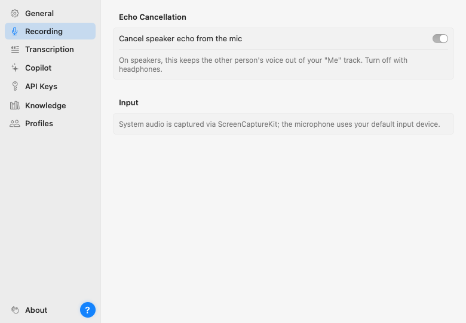
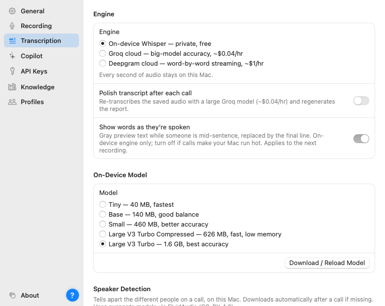

Open Settings from the sidebar (or press ⌘,). Topics are on the left, one page per topic. There's no Save button anywhere: every change is saved the moment you make it, and a small "Saved" chip confirms it.
Open Parrot at login starts Parrot when you log in, so it's there to notice your first call. It's the normal macOS login item, listed in System Settings → General → Login Items. Then appearance (follow the system, or force light or dark), where your audio files live on disk with a "Show in Finder" button, and the version you're running. Updates take care of themselves: "Keep Parrot up to date" downloads new versions in the background and installs them when you quit, never during a recording, and "Check Now" looks right away. There's also an "Open User Guide" link that brings up this guide, a "Show Welcome Tour" link that replays the first-run setup (permissions and model choice), an About row at the bottom of the topic list (that's me saying hi), and the little question-mark button for the guide too.

One important toggle lives here: echo cancellation. If you take calls on speakers, keep it on; it subtracts the other person's voice from what your microphone hears, so their words don't get written down twice as yours. With headphones there's nothing to cancel and you can turn it off.
Below it: Call Detection (whether Parrot asks, records automatically, or does nothing when a call starts, plus the apps you told it to ignore), Calendar (connect, and whether the Copilot may read invites or you'd like a reminder before meetings), and Bookmarks (the ⌃⌥M shortcut). All three are explained in Recording a call.
Where meetings go after a call: a folder for Markdown notes (Obsidian works well), a follow-up email draft after every call, a webhook to Zapier, Make or n8n, and a read-only connection for AI apps such as Claude Desktop. All explained in Connections.
On-device only (for every call, or per profile under Profiles), hiding personal details from cloud AI, your recording-consent notice, and automatic clean-up of old audio and meetings. See What leaves your Mac.

Everything about how speech becomes text:
base is quick, large-v3-turbo is the accuracy
pick on Apple Silicon, and its compressed 626 MB variant is nearly as
accurate while using far less memory. Switching downloads the new model
once.
The on switch for the AI layer, the pace and conversation-window controls that decide what it costs, and which model powers the live cards and the reports (they can be different). This page has its own guide: Setting up the Copilot for the providers and The Copilot during a call for the controls.
Keys for Claude, Groq, Deepgram and TypeSafe AI, one field each. They're stored in the macOS Keychain, not in a file, and never leave the machine except to talk to their own service. Paste, done. (A custom server's key sits on the Copilot page, next to its address.)
The documents the Copilot may answer from, with per-profile tagging. Full story in Knowledge base.
The deepest page, with its own guide: Call profiles. This is where you shape what the Copilot watches for, card by card.